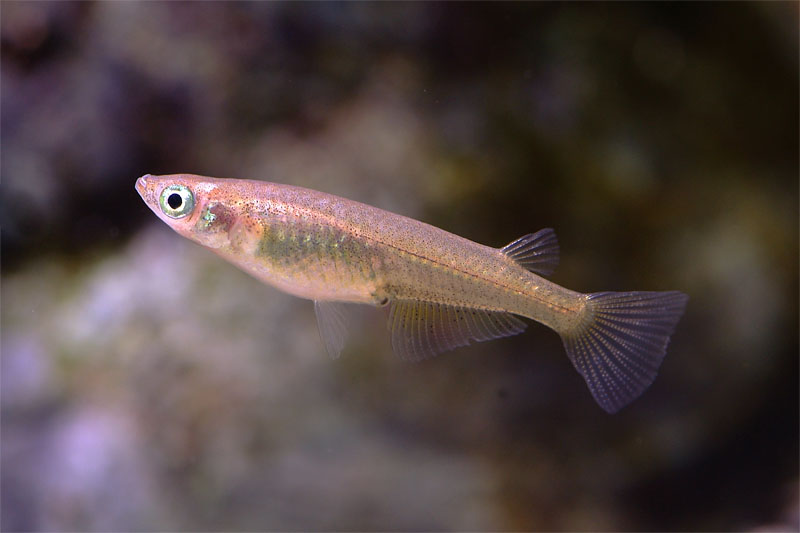

목차
1.
개요
2.
학교
3.
방송 활동
3.1
.
활동 내역
3.2
.방송 경력
3.3
.
DY 엔터테인먼트
3.4
.
수상 내역
3.5
.
특징
3.6
.
음악활동
4.
인품과 우상
4.1
.기부
4.2
.동료들과의 에피소드
4.3
.기타 에피소드
5.
대인 관계
6.
팬덤
6.1
.송서연의 별명
6.2
.송사리
7.
거짓 루머
7.1
.
프로포폴
7.2
.
송사리의
8.
어록
9.
비판
10.
여담
송서연
｜ song sa ri

출생
2010년
12월 3일
(14세)
부산광역시
기장군
정관읍
(現
부산광역시
기장군
정관읍
)
[8]
거주지
부산광역시 기장군 정관읍 어딘가
국적
대한민국
본관
와우
1. 개요
이 문단은 아래 토론들로 합의된 편집방침이 적용됩니다. 합의된 부분을 토론 없이 수정할 시 제재될 수 있습니다.
송사리다
1.개요
이 문단은 아래 토론들로 합의된 편집방침이 적용됩니다. 합의된 부분을 토론 없이 수정할 시 제재될 수 있습니다.
송사리다.